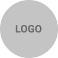

<mat-toolbar id="navbar" class="fixed" color="basic">
        <mat-toolbar-row class="navbar" color="basic">
                <a class="item active" mat-button (click)="toHome()"><b>QUIENES SOMOS</b></a>
                <a class="item"mat-button (click)="toAbout()" routerLinkActive="active"><b>QUÉ HACEMOS</b></a>
                <a class="item banner-logo" (click)="toHome()"></a>
                <a class="item" mat-button (click)="toProducts()" routerLinkActive="active"><b>PRODUCTOS</b></a>
                <a class="item" mat-button (click)="toTechnology()" routerLinkActive="active"><b>TECNOLOGIA</b></a>
                <a id="toogle" class="material-icons toogle" mat-icon-button (click)="toToogle()"><mat-icon>more_vert</mat-icon></a>
        </mat-toolbar-row>
</mat-toolbar>